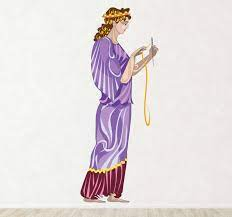

| Image | Sister | Description |
|---|---|---|
|  | Clotho | Clotho is the youngest of the three sisters, responsible for spinning the thread of life. |
Myths About Clotho
- Spinning the Thread of Life: Clotho was responsible for spinning the thread of life for every mortal and god. She held the power to determine the beginning of one's life.
- The Eternal Spinner: According to myth, Clotho's spinning was relentless, symbolizing the continuous passage of time and the inevitability of fate.
- Influence Over Destinies: While Clotho spun the thread, her sisters, Lachesis and Atropos, determined its length and cut it, respectively. Thus, Clotho’s role was crucial but only a part of the grand design of fate.
- Mythical Depictions: In art, Clotho is often depicted holding a spindle or a spinning wheel, representing her role in weaving the tapestry of life.
Clotho Weaving